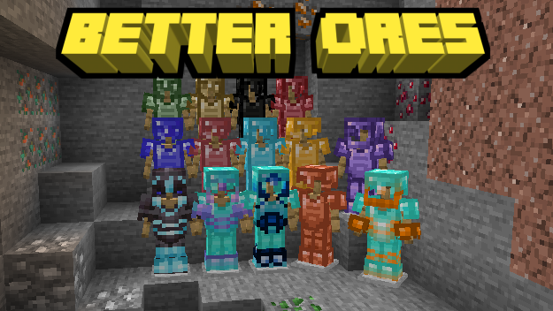

17 de Agosto de 2022 | Jeroo
Better Ores
El mejor addon de ores para tu Minecraft Bedrock!

El mejor addon de ores para tu Minecraft Bedrock!

El mejor addon de martillos 3x3 para tu Minecraft Bedrock
El mejor addon de herramientas vanilla para tu Minecraft Bedrock
El mejor addon de estructuras para tu Minecraft Bedrock
El mejor addon de mochilas para tu Minecraft Bedrock
Mas crafteos para tu Minecraft Bedrock
Anillos con efectos para tu Minecraft Bedrock